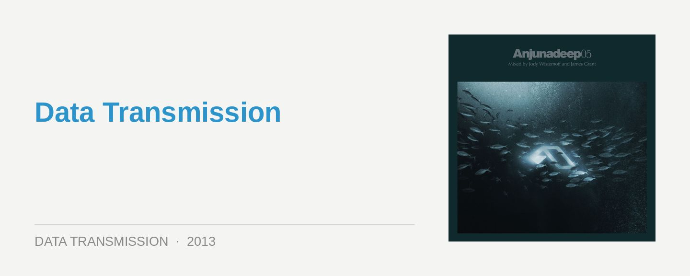

Anjunadeep 05 – Mixed By Jody Wisternoff & James Grant
Label: AnjunadeepScore: 9.5/10
The evolution of the Anjunadeep label over the years has been an interesting one, and always worth paying attention to. Beginning as a progressive offshoot to Anjunabeats, the hugely successful label of reigning trance duo Above & Beyond, it eventually forged its own unmistakable identity thanks to the clever steering of label boss James Grant, who’s also helped mixed most of its annual showcases.
Grant returns to mix one of the discs on this year’s fifth edition, though other changes at the helm reflect Anjuandeep’s elsewhere shifts in direction. Alongside the wider revival of deep house, Anjunadeep has gradually evolved its own take on the sound, encapsulated by artists like Dusky, who’ve had stunning success in connecting contemporary deep house with the classic, melodic aspects of progressive. Jaytech had mixed the previous three installments alongside Grant, though gradually found himself drawn to the euphoria of Anjunabeats, so this year Jody Wisternoff was selected to take the reigns.
James Grant’s mix this time around offers a stunning picture of what the Anjunadeep sound has come to represent. Possibly the most deliciously programmed mix in the series so far, he’s found the perfect junction between deepness and melody; bordering on perfection. The jazzy piano twinkles and strings of Cardigan Croquet Club begins things on a beautiful tip, and from there the first half of the mix is one big homerun of gentle grooves, luscious melodies and long, sumptuous breakdowns. Grant delivers another gem collaboration with studio whiz Andrew Bayer with Living, alongside some particularly lush contributions from Beckworth and Universal Solution.
It’s the higher intensity of the mix’s second half though that really hammers it home, with a dizzying run of melody and emotion soaked gems. Tom Middleton contributes one of the most gloriously euphoric tracks on the whole release, while Dusky channels the full force of their musical innovation with Mr Man. Summoning a classic sense of soul in its vocal samples, and a crackly piano in the breakdown that could have been lifted straight off an ancient 12”; amongst this though, the energy is pure dancefloor euphoria.
Meanwhile, Lange’s About You is a stunning fusion of ambient melodies and hypnotic, percussive grooves, while Grant and Bayer’s decision to remix Australian indie-dance outfit The Presets achingly poignant It’s Cool was a dash of genius inspiration. These tracks are just too good. However, while James Grant’s programming has generally been particularly good, this one pulls together possibly better than ever before. It’s amazingly capped off by Dusky returning to their progressive roots and reviving their Solarity alias – with a single extended ambient breakdown that will leave you with shivers down your spine and a blissful smile on your face.
After dropping his first solo Trails We Blaze LP on Anjunadeep last year, Wisternoff debuts his mix here. It’s nearly equally as lush and sumptuous, though this time it’s defined by more of a soulful, summery vibe, and he’s more inclined to play with earthy, organic elements, as opposed to Grant’s turn with the deeper emotions. There’s piano riffs and soulful vocals galore.
Wisternoff has also hit an amazing sweet spot in the studio, with his hand in no less than 10 out of the 14 tracks on this mix; and it’s the deft studio hand of a veteran, too. It’s particularly evident with his fresh and funky take on Above & Beyond’s Alchemy, and it’s otherwise overflowing with his own singles and remixes. Once again, the programming is exquisite; though to a degree, Wisternoff’s mix reflects more his own identity than necessarily that of the label.
While both discs on Anjunadeep 05 are of a stellar quality, Wisternoff’s mix will go down like a cool drink on a hot summer day, while Grant’s mix is one that will really stay with you. To a degree, with Jaytech moving on to trancier pastures, the series does now lack some of the surefooted identity that came with the contrast of his more powering selections. However, these are faint criticisms. Anjunadeep has achieved the ultimate goal of any independent label, in that it’s carved out a musical territory all its own. The sounds are modern, but it’s grounded in the classic emotion, energy and ethos of progressive house – and this is definitely a very, very good thing. Put it on repeat on your stereo this summer.